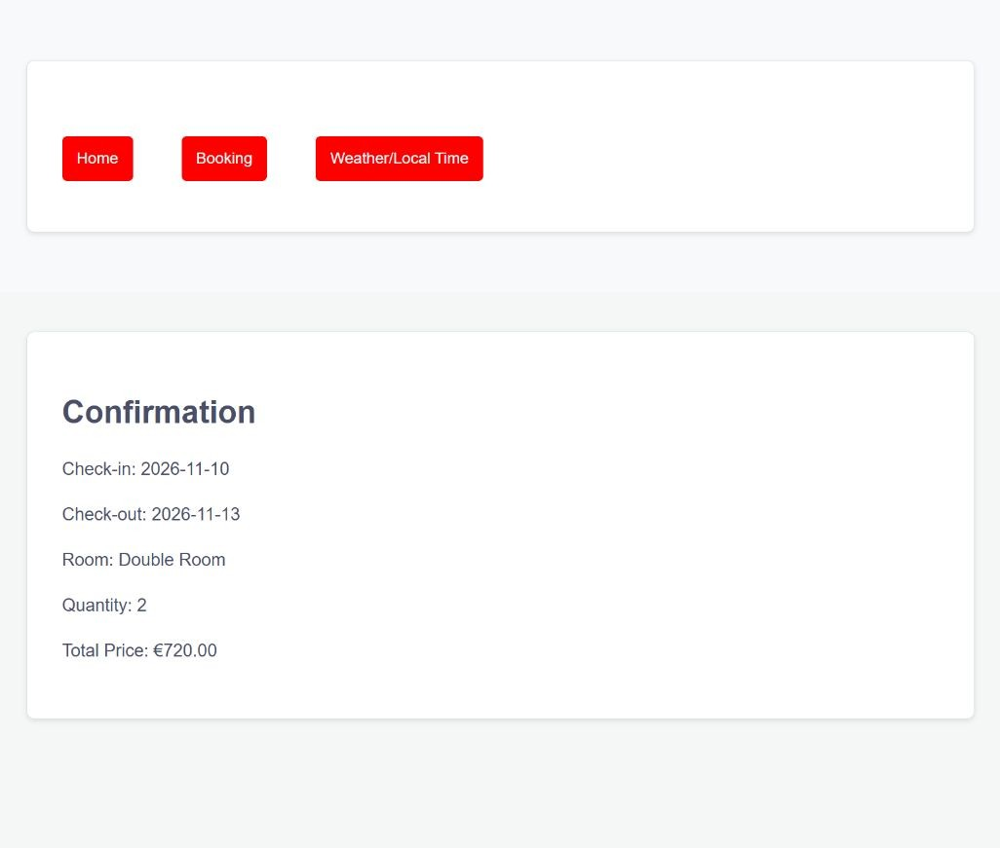

Hotel booking prototype.
From dates and room selection to a server-calculated booking summary.

What I built
Built an Express and EJS hotel-booking prototype, then adapted the original college source into a safe, reproducible local demonstration.
Why it matters
A multi-step transaction should carry information reliably from one screen to the next. The project explores session state, validation and pricing across a booking journey.
How it works
- 01
Choose check-in and check-out dates.
- 02
Select a synthetic room type and quantity.
- 03
Review a server-calculated total on the confirmation page. No reservation or payment is made.
What it demonstrates
Server-rendered web development, session handling, input validation and turning a multi-step process into a working application.
Evidence, with context.
Browser-tested the complete dates → room → demo continuation → confirmation flow. Four automated tests verify date arithmetic, invalid dates, quantities and pricing. Dependency audit reported no known vulnerabilities at the time of review.
Scope and limitations
Academic prototype with synthetic room prices. No live availability, real hotel affiliation, account system or payment integration. MySQL mode was inspected but not integration-tested. Original photographs were excluded because redistribution rights were unclear.
Visual provenance and source attribution are recorded in the evidence register ↗.
Under the surface.
Architecture, methods and improvements
Retained the original booking, room-selection and confirmation templates. Added missing-session guards and chronological date validation; totals are calculated server-side. Removed embedded API keys, SQL exports and broken CDN dependencies. The safe default uses synthetic room records and loopback binding.
Try it locally
Install Node.js. Run npm ci, npm test and npm start. Open http://127.0.0.1:3000. Use sample details only. Optional MySQL mode is documented in the repository.
The portfolio is a static GitHub Pages site. Server applications run locally; the portfolio does not collect bookings, credentials or payments.